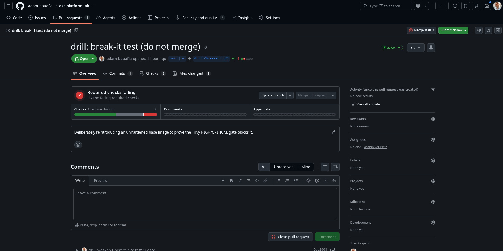
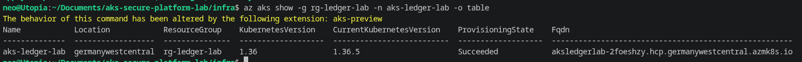
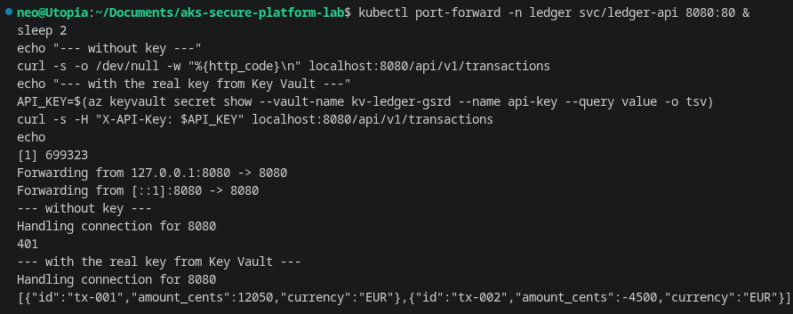
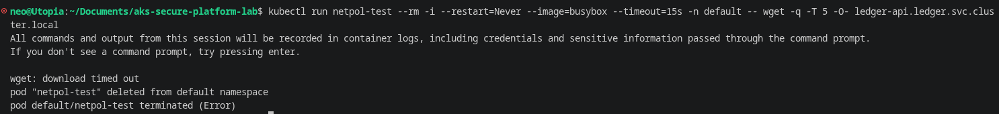
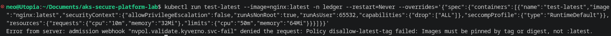
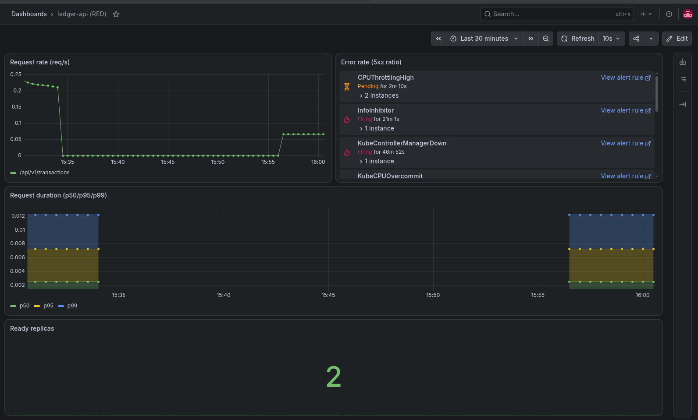
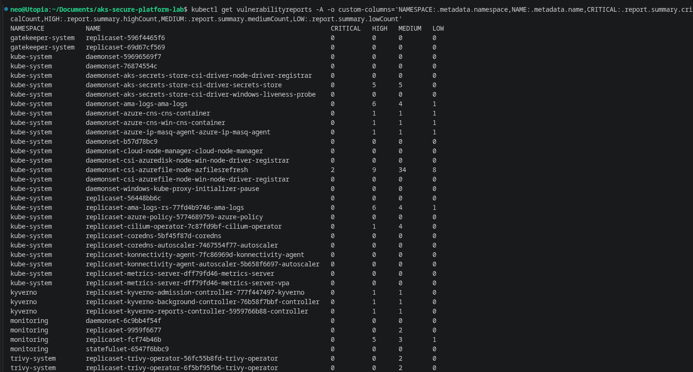

Over the past week I built and ran a small platform on Azure Kubernetes Service: a fake banking API called ledger-api, secured at every layer — the container image, the Azure infrastructure, the Kubernetes deployment, the admission policies, the observability stack, and the vulnerability management process around it. Every piece in this article was applied to a real, running AKS cluster and verified directly, not just written and left untested.
Here's what it took.
The same application, built two different ways, makes the case for image hardening better than any slide deck. The naive build uses the full golang base image and runs the app with go run. The hardened build is a multi-stage Dockerfile that throws away the compiler and ships only the compiled binary, on a distroless base pinned by digest, running as a non-root user with no shell and no package manager.
| naive | hardened | |
|---|---|---|
| Size | 1.32 GB | 19.5 MB |
| HIGH/CRITICAL CVEs | 183 | 0 |
| Runs as | root | UID 65532 |
| Has a shell? | yes | no |
Same code. Same functionality. A completely different risk profile, just from how the image is built.
It's one thing to write a CI pipeline that scans images; it's another to prove it actually stops a bad one. I deliberately opened a pull request that swapped the hardened Dockerfile for an unhardened one, to watch the pipeline react. Trivy's severity gate failed the build, and branch protection blocked the merge outright — for everyone, including the repo admin.

Every GitHub Action in the pipeline is pinned by full commit SHA, not a mutable tag — a lesson the industry learned the hard way from supply-chain attacks where a moved tag quietly swapped in malicious code.
Everything — the resource group, the VNet, the AKS cluster, the container registry, Key Vault, Log Analytics, the managed identity — is defined in Terraform. The AKS cluster uses Azure CNI Overlay with the Cilium data plane: pods get IPs from an overlay range that never touches the VNet's address space, and NetworkPolicy is enforced natively, with no extra component to install.

This is the part I'm proudest of. The app needs an API key to authenticate requests. That key lives in Azure Key Vault — full stop. It is never in the container image, never in a Kubernetes Secret, never in a CI variable.
The pod's identity is federated to the AKS cluster's own OIDC issuer. At runtime, it exchanges a short-lived Kubernetes token for an Entra ID token, and the Secrets Store CSI driver uses that token to pull the secret straight from Key Vault and mount it into the pod. No password is stored anywhere to make that exchange happen — it's all identity, not secrets.
I tested this exactly the way an attacker would: hit the endpoint with no key, then with the real one.

A NetworkPolicy manifest is easy to write and easy to get wrong. I didn't just apply mine and trust it — I tested it. Default-deny on all ingress and egress, with explicit allows only for DNS and for the app's own port from the namespaces that actually need it. A test pod spun up outside the app's namespace, trying to reach the service, simply timed out.

Admission policies, enforced with Kyverno, reject two common mistakes outright: deploying an image tagged :latest instead of something pinned, and deploying a container with no CPU/memory requests or limits declared. I verified both by actually trying to deploy violations.

A Grafana dashboard built around the RED method — request rate, error rate, request duration — scrapes the app's own /metrics endpoint via Prometheus. I generated real traffic against the app and watched the dashboard update live.

Alerts are wired up too: one fires if the 5xx error ratio goes above 5% for five minutes, another if fewer than two replicas are ready.
A clean scan at build time isn't the end of the story — new CVEs get published against existing images after you've already shipped them. A nightly GitHub Actions workflow rescans the deployed image and opens an issue automatically if anything new shows up. In the cluster itself, Trivy Operator continuously scans every running workload, and it found real, concrete findings — not hypothetical ones.

None of this was theoretical. Every control here — the hardened image, the workload identity, the network policy, the admission guardrails, the dashboards, the vulnerability loop — was deployed to a live AKS cluster, tested against real traffic and real attack attempts, and then torn down cleanly when the work was done.